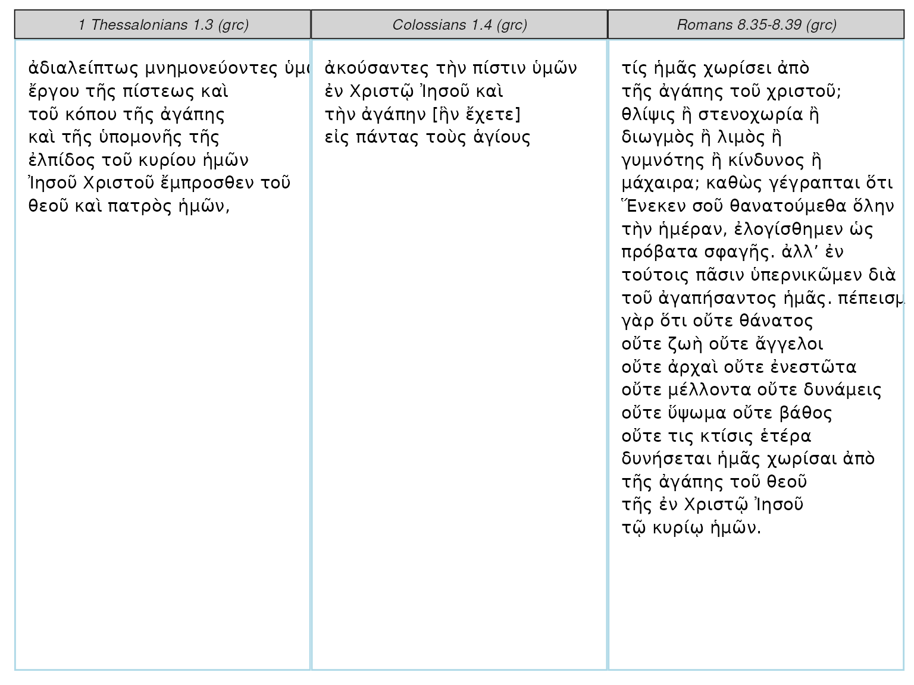

rperseus Vignette
David Ranzolin
2024-03-28
Source:vignettes/rperseus-vignette.Rmd
rperseus-vignette.RmdIntroduction
rperseus provides tools to get and analyze classical texts. Version 0.1.2 includes:
-
get_perseus_text, a function to obtain a text from the Perseus Digital Library -
perseus_parallel, a function to render a text parallel inggplot2 -
parse_excerpt, a function to parse any Greek excerpt -
perseus_catalog, a data frame of available texts -
greek_stop_words, a data frame of Greek pronouns, articles, prepositions, and particles
## # A tibble: 6 × 5
## urn group_name label description language
## <chr> <chr> <chr> <chr> <chr>
## 1 urn:cts:latinLit:stoa0215b.stoa001.opp-… Orientius… Comm… Orientius … lat
## 2 urn:cts:latinLit:stoa0215b.stoa002.opp-… Orientius… Carm… Orientius … lat
## 3 urn:cts:latinLit:stoa0215b.stoa003.opp-… Orientius… Orat… Orientius … lat
## 4 urn:cts:latinLit:phi9500.phi035.opp-lat1 Anonymous Epit… Anonymous,… lat
## 5 urn:cts:latinLit:tmp1347.tmp1347.opp-la… Columbanu… Epis… Columbanus… lat
## 6 urn:cts:greekLit:tlg0082.tlg004.1st1K-g… Apolloniu… De c… Apollonius… grcA snapshot of available authors:
## # A tibble: 347 × 2
## group_name n
## <chr> <int>
## 1 Libanius 103
## 2 Galen 101
## 3 Hebrew Bible 79
## 4 Augustinus 70
## 5 Lysias 68
## 6 Homeric Hymns 66
## 7 Mishnah 63
## 8 Plato 62
## 9 Isocrates 60
## 10 Hieronymus 56
## # ℹ 337 more rowsGetting a Text
Once you’ve identified the relevant URN, paste it into a call to get_perseus_text. Here I’ve called for the Greek text of Plato’s Crito:
crito <- get_perseus_text(urn = "urn:cts:greekLit:tlg0059.tlg003.perseus-grc2")
crito$text[1]## [1] "ΣΩ. τί τηνικάδε ἀφῖξαι, ὦ Κρίτων; ἢ οὐ πρῲ ἔτι ἐστίν; ΚΡ. πάνυ μὲν οὖν. ΣΩ. πηνίκα μάλιστα; ΚΡ. ὄρθρος βαθύς. ΣΩ. θαυμάζω ὅπως ἠθέλησέ σοι ὁ τοῦ δεσμωτηρίου φύλαξ ὑπακοῦσαι. ΚΡ. συνήθης ἤδη μοί ἐστιν, ὦ Σώκρατες, διὰ τὸ πολλάκις δεῦρο φοιτᾶν, καί τι καὶ εὐεργέτηται ὑπʼ ἐμοῦ. ΣΩ. ἄρτι δὲ ἥκεις ἢ πάλαι; ΚΡ. ἐπιεικῶς πάλαι. ΣΩ. εἶτα πῶς οὐκ εὐθὺς ἐπήγειράς με, ἀλλὰ σιγῇ παρακάθησαι; ΚΡ. οὐ μὰ τὸν Δία, ὦ Σώκρατες, οὐδʼ ἂν αὐτὸς ἤθελον ἐν τοσαύτῃ τε ἀγρυπνίᾳ καὶ λύπῃ εἶναι, ἀλλὰ καὶ σοῦ πάλαι θαυμάζω αἰσθανόμενος ὡς ἡδέως καθεύδεις· καὶ ἐπίτηδές σε οὐκ ἤγειρον ἵνα ὡς ἥδιστα διάγῃς. καὶ πολλάκις μὲν δή σε καὶ πρότερον ἐν παντὶ τῷ βίῳ ηὐδαιμόνισα τοῦ τρόπου, πολὺ δὲ μάλιστα ἐν τῇ νῦν παρεστώσῃ συμφορᾷ, ὡς ῥᾳδίως αὐτὴν καὶ πρᾴως φέρεις. ΣΩ. καὶ γὰρ ἄν, ὦ Κρίτων, πλημμελὲς εἴη ἀγανακτεῖν τηλικοῦτον ὄντα εἰ δεῖ ἤδη τελευτᾶν. ΚΡ. καὶ ἄλλοι, ὦ Σώκρατες, τηλικοῦτοι ἐν τοιαύταις συμφοραῖς ἁλίσκονται, ἀλλʼ οὐδὲν αὐτοὺς ἐπιλύεται ἡ ἡλικία τὸ μὴ οὐχὶ ἀγανακτεῖν τῇ παρούσῃ τύχῃ. ΣΩ. ἔστι ταῦτα. ἀλλὰ τί δὴ οὕτω πρῲ ἀφῖξαι; ΚΡ. ἀγγελίαν, ὦ Σώκρατες, φέρων χαλεπήν, οὐ σοί, ὡς ἐμοὶ φαίνεται, ἀλλʼ ἐμοὶ καὶ τοῖς σοῖς ἐπιτηδείοις πᾶσιν καὶ χαλεπὴν καὶ βαρεῖαν, ἣν ἐγώ, ὡς ἐμοὶ δοκῶ, ἐν τοῖς βαρύτατʼ ἂν ἐνέγκαιμι. ΣΩ. τίνα ταύτην; ἢ τὸ πλοῖον ἀφῖκται ἐκ Δήλου, οὗ δεῖ ἀφικομένου τεθνάναι με; ΚΡ. οὔτοι δὴ ἀφῖκται, ἀλλὰ δοκεῖν μέν μοι ἥξει τήμερον ἐξ ὧν ἀπαγγέλλουσιν ἥκοντές τινες ἀπὸ Σουνίου καὶ καταλιπόντες ἐκεῖ αὐτό. δῆλον οὖν ἐκ τούτων τῶν ἀγγέλων ὅτι ἥξει τήμερον, καὶ ἀνάγκη δὴ εἰς αὔριον ἔσται, ὦ Σώκρατες, τὸν βίον σε τελευτᾶν. ΣΩ. ἀλλʼ, ὦ Κρίτων, τύχῃ ἀγαθῇ, εἰ ταύτῃ τοῖς θεοῖς φίλον, ταύτῃ ἔστω· οὐ μέντοι οἶμαι ἥξειν αὐτὸ τήμερον."Getting Multiple Texts with the tidyverse
You can collect all of Plato’s available English translations with the tidyverse:
Rendering Parallels
You can render small parallels with perseus_parallel:
tibble::tibble(label = c("Colossians", "1 Thessalonians", "Romans"),
excerpt = c("1.4", "1.3", "8.35-8.39")) %>%
dplyr::left_join(perseus_catalog) %>%
dplyr::filter(language == "grc") %>%
dplyr::select(urn, excerpt) %>%
as.list() %>%
purrr::pmap_df(get_perseus_text) %>%
perseus_parallel(words_per_row = 4)## Joining with `by = join_by(label)`
Parsing Excerpts
You can parse any Greek excerpt with parse_excerpt. A data frame is returned including part of speech, person, number, tense, mood, voice, gender, case, and degree.
parse_excerpt("urn:cts:greekLit:tlg0031.tlg002.perseus-grc2", "5.1-5.3")## # A tibble: 48 × 12
## word form verse part_of_speech person number tense mood voice gender case
## <chr> <chr> <chr> <chr> <chr> <chr> <chr> <chr> <chr> <chr> <chr>
## 1 καί Καὶ 5.1 conjunction NA NA NA NA NA NA NA
## 2 ἔρχο… ἦλθον 5.1 verb third plural aori… indi… acti… NA NA
## 3 εἰς εἰς 5.1 preposition NA NA NA NA NA NA NA
## 4 ὁ τὸ 5.1 article NA singu… NA NA NA neuter accu…
## 5 πέραν πέραν 5.1 adverb NA NA NA NA NA NA NA
## 6 ὁ τῆς 5.1 article NA singu… NA NA NA femin… gena…
## 7 θάλα… θαλά… 5.1 noun NA singu… NA NA NA femin… gena…
## 8 εἰς εἰς 5.1 preposition NA NA NA NA NA NA NA
## 9 ὁ τὴν 5.1 article NA singu… NA NA NA femin… accu…
## 10 χώρα χώραν 5.1 noun NA singu… NA NA NA femin… accu…
## # ℹ 38 more rows
## # ℹ 1 more variable: degree <chr>